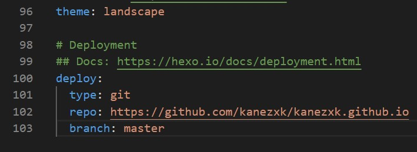

[简介] 本文主要介绍如何利用hexo搭建个人博客并部署到github上
准备软件
- NodeJS： http://node.js.org/
- Git： http://npm.taobao.org/mirrors/git-for-windows/ （镜像源）
安装cnpm
安装完NodeJS以及Git后，需要安装cnpm，从而可以使用淘宝镜像源下载安装包，具体做法如下：
以管理员身份打开命令行（win + R，输入cmd），在命令行输入：
npm install -g cnpm --registry=https://registry.npm.taobao.org
安装hexo
命令行输入：
cnpm install -g hexo-cli
初始化hexo
在你所想要存放博客源文件的位置新建一个文件夹，并设置为当前路径（按住shift同时右击该文件，选择在此处打开cmd），之后在命令行输入：
hexo init
至此本地博客搭建完毕，可以在命令行输入 hexo s 来预览。
下面介绍如何将本地博客部署到Github上去
github上新建仓库
需要在github上创建一个仓库 (没有注册github的话先注册一个账号， https://github.com/) ，
注意仓库名 (Repository name) 必须是<你的昵称>.github.io
安装git的部署插件
命令行输入：
cnpm install hexo-deployer-git –save
修改根目录下（之前新建的文件夹）的配置文件_config.yml，修改文件末尾type字段值，并添加repo和branch字段，其中repo字段值为你刚刚创建的github仓库的url。

之后打开gitbash，在命令行输入：
git config --global user.name "你的github用户名"
再输入：
git config --global user.email "XXX@XXX"
推送到远端
返回命令行，输入： hexo d 将文件推送到github服务器端，第一次会出现弹窗，输入github用户名与密码完成验证即可。
访问个人博客
至此，博客成功部署到github上去了，你就可以使用之前输入的仓库名(XXX.github.io)访问博客了（可能由于没有及时更新而出现无法打开的问题，可以尝试多刷新几次）。
更换主题
默认主题为landscape，你可以上 https://hexo.io/themes/ 寻找你心仪的主题。
找到想要的主题后，可以进行克隆，在命令行输入：
git clone https://github.com/XXX.git themes/<主题名>
可以将主题克隆到你本地的themes文件夹下的<主题名>子文件夹中。
之后修改根目录下的配置文件_config.yml，将其中的theme字段值改为新的主题名（前面的<主题名>），这样主题就应用到你的博客上了，之后可以根据官方文档进行一些个性化参数的配置。
* 常用的hexo命令
hexo new “My New Post” 创建新博文
hexo s 在4000端口启动本地服务器，可预览博客效果
hexo clean 清除缓存文件 db.json 和已生成的静态文件 public
hexo generate 生成静态文件
hexo deploy 部署到远端